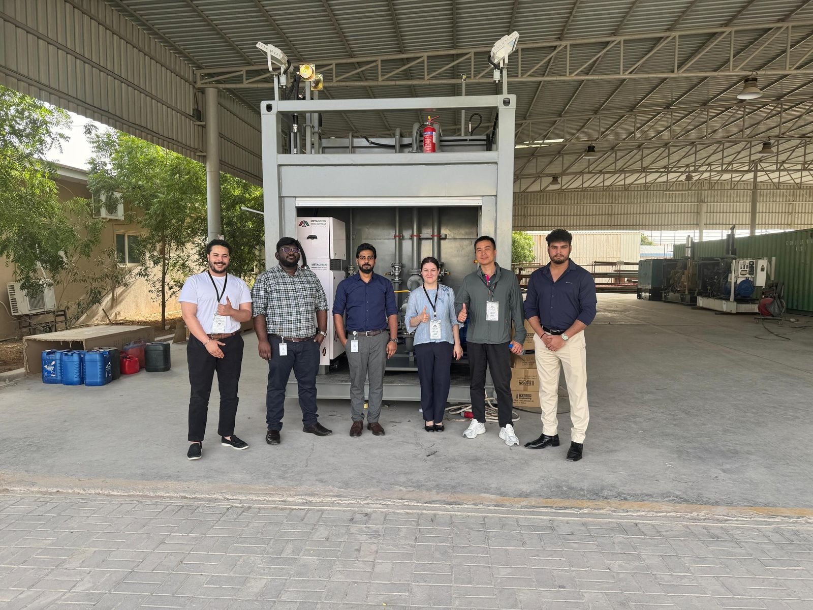
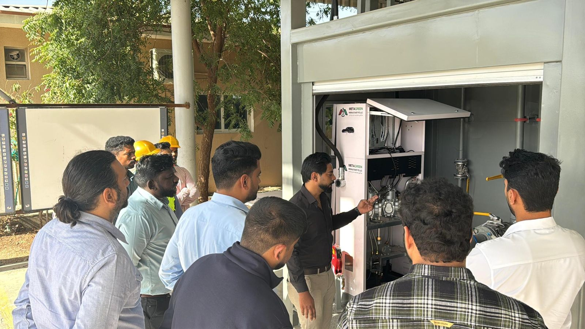
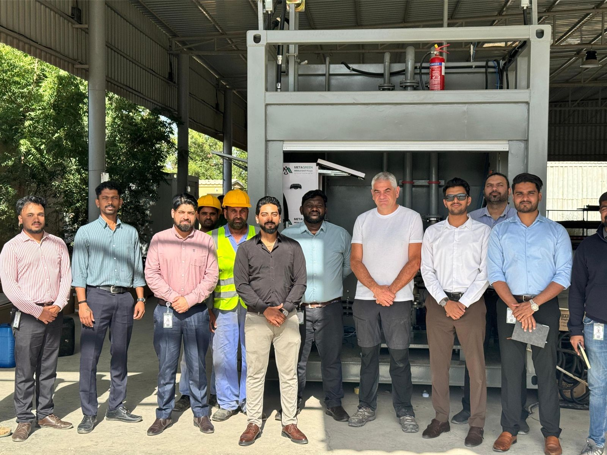
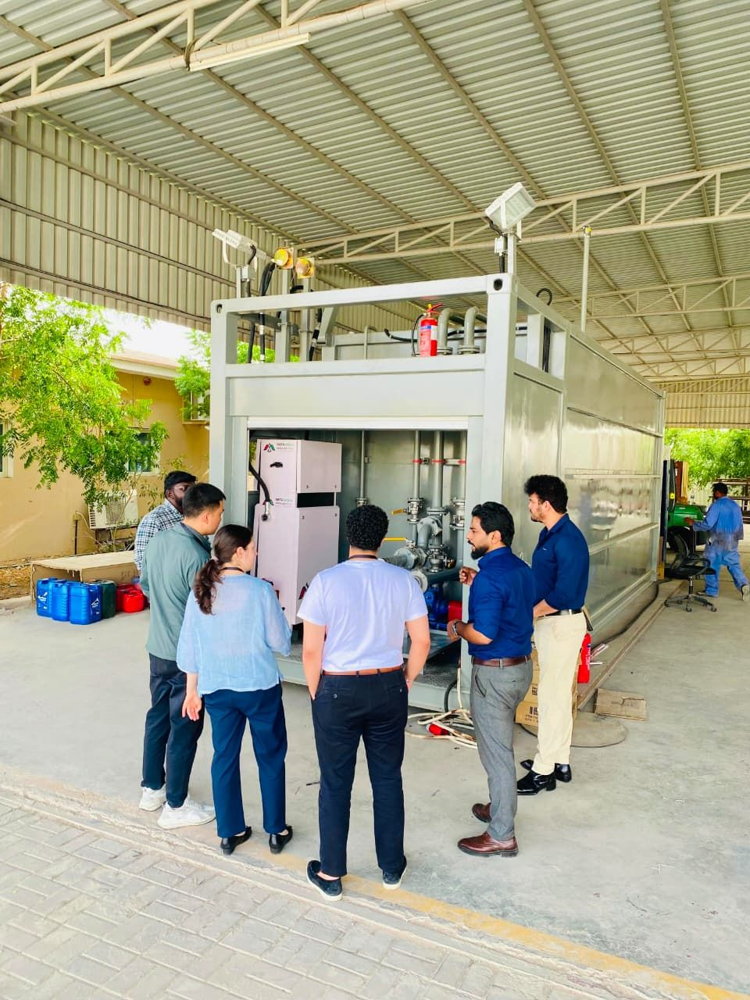
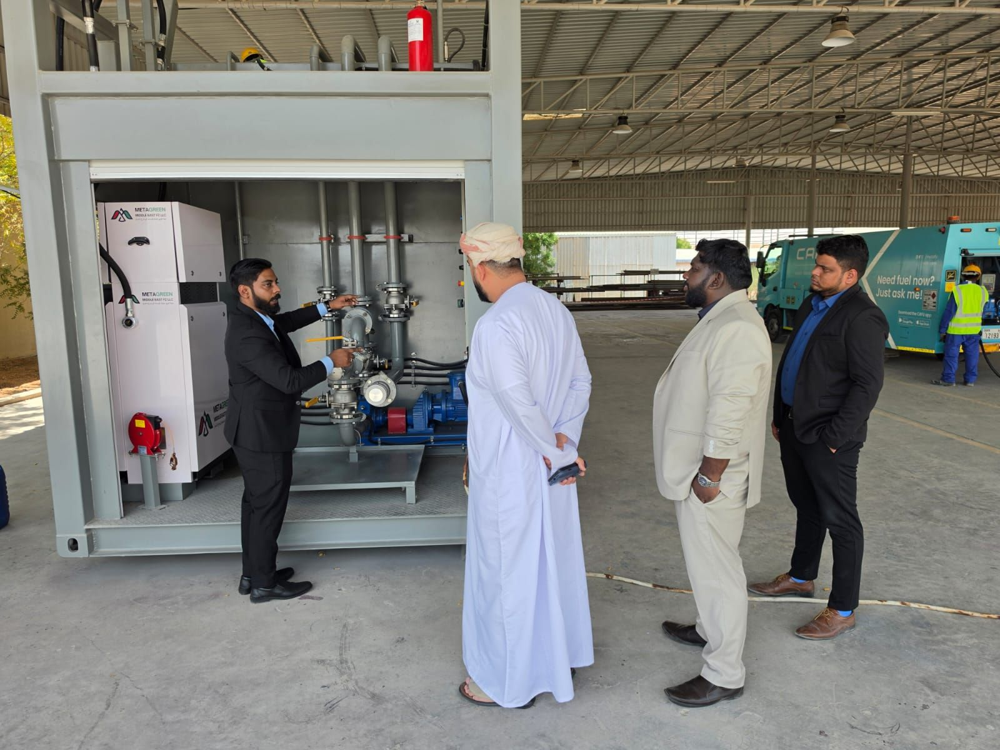
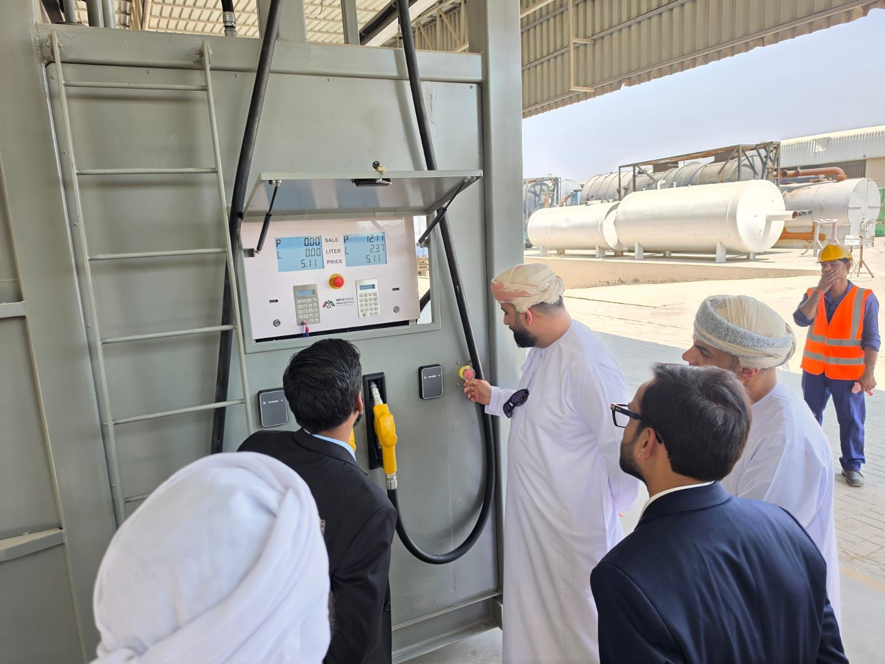
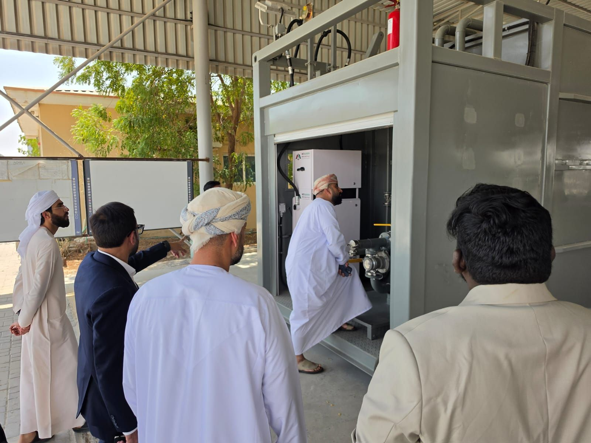

Demonstration unit
Manufactured to demonstrate a portable fueling unit with integrated fleet and fuel management.
Portable fueling unit built at Meta Green as a demonstration unit, integrated with Maser Italia's smart fleet-management system. Same role as on the Emarat MFU: design leadership, project coordination and lead mechanical/package design through manufacturing and commissioning.
Manufactured to demonstrate a portable fueling unit with integrated fleet and fuel management.
Smart fleet-management system from Maser Italia integrated into the unit's dispensing and control equipment.
Responsible from design through manufacturing and commissioning.
DESIGNED: 3D model and 2D engineering drawings for the portable fueling unit and its mechanical interfaces.
COORDINATED: Procurement, production and instrumentation activities, and the interfaces for integrating Maser Italia's fleet-management equipment.
LED: Design coordination as Head of Design Department, Project Coordinator and Lead Mechanical/Package Designer.
EXECUTED: Supported the unit through manufacturing and commissioning.
The completed unit, commissioning of the fuel-management system, and its use as the reference unit on client verification visits.




Prospective clients visit to verify the company's capability and track record; the demo unit is the reference they inspect.



Proprietary drawings, partner documentation and confidential commercial information are not reproduced here.